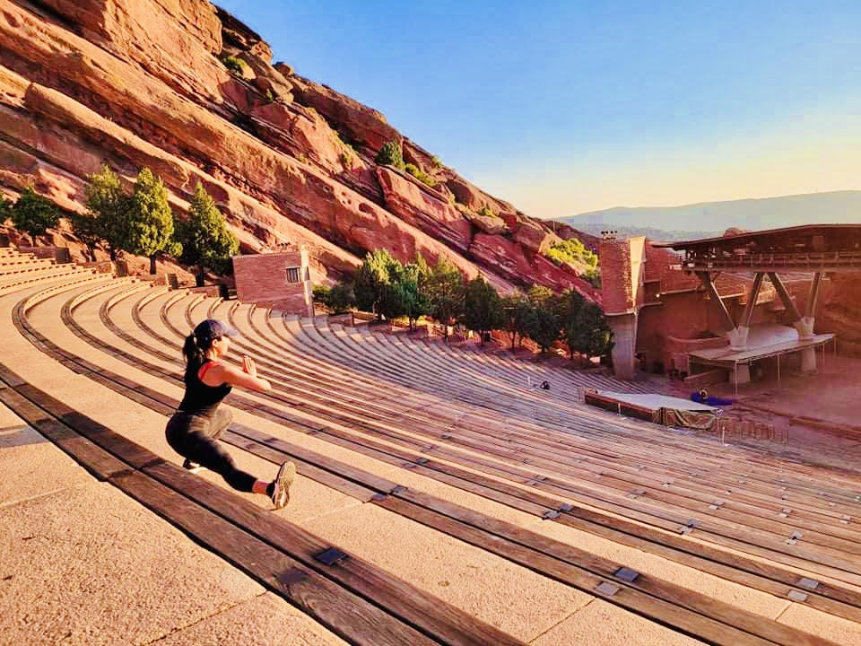

The Practice
Asana as a path
of Inquiry
Original Music by Michael Dwan Singh
Classes feature original compositions for sarangi — an ancient Indian instrument prized for its soulful, voice-like qualities.
Swati teaches yoga inspired by traditional yoga philosophy, history, and cultural immersion, where asana, pranayama, and philosophy are taught as one inseparable practice. She believes yoga practice is deepened through connection to its roots — the concepts, language, and heritage that shaped it.
The Philosophy
Yoga as a map
of the self
The practice of yoga invites a lifelong journey of Svadhyaya — the study of the self in order to know the Self, with ancient texts acting as a mirror. Swati is passionate about weaving knowledge of yoga philosophy and her rich cultural perspectives into yoga teacher education.
Committed to mentoring future teachers, she brings a deep understanding of both energetic and physical anatomy, as well as a dedication to creating warm, inclusive environments for the practice and study of yoga. Available as a guest lecturer for YTT programs and workshops, and for individual mentoring of yoga teachers and practitioners looking to deepen their practice and connect with the source culture.
Ancient Texts
The Yoga Sutras, Upanishads, and Bhagavad Gita as living mirrors for self-inquiry and practice.
Sanskrit
Language carries meaning. Understanding Sanskrit deepens the practice beyond translation.
Cultural Integrity
Yoga has roots. Honoring them brings depth, meaning, and responsibility to teaching and learning.
Energetic & Physical Anatomy
Subtle body and biomechanics studied in tandem — the full landscape of the practitioner.
"Yoga is the journey of the self, through the self, to the self."

Retreats
Practice in
extraordinary places
Some lessons can only be learned when the ordinary falls away — Swati brings yoga's philosophical depth and cultural context to retreat settings. Available for classes, workshops, and immersive sessions in places that call the soul inward.
If you're a retreat organizer looking to add depth and dimension to your program, she'd love to hear from you.
Get in Touch
200-hr Certification · Soma Yoga
Vipassana Meditation Practice
Inner Engineering · Sadhguru
About Swati
A seeker, a student,
a teacher.
Swati came to yoga not through a studio but through a lineage — a tradition passed through culture, language, and story. Her practice is inseparable from the philosophy and heritage from which it grew.
Swati completed her 200-hour certification at Soma Yoga with Amy Leydon and Todd Skoglund. Her personal practice is also rooted in the teachings of Vipassana meditation and Sadhguru's Inner Engineering program.
She draws inspiration from her Indian cultural upbringing and communities, including the stories and teachings of ancient texts and modern interpretations, the wisdom of Ayurveda, and the beauty of South Asian artists, poets, and musicians.
Connect
Begin the
conversation
Whether you're looking to deepen your practice, collaborate on a retreat, or explore mentoring — Swati would love to connect.